Sri Lanka T20I Team
2014 T20 World Cup winners with spin bowling strength.
About Sri Lanka T20I Team
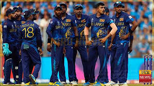
Country: Sri Lanka
Home Ground: Various (e.g., R. Premadasa Stadium, Colombo)
Captain: Wanindu Hasaranga
Coach: Mahela Jayawardene
Sri Lanka’s T20I team excels in spin bowling and dynamic batting, with a legacy of winning the 2014 T20 World Cup.
Sri-lankan Players
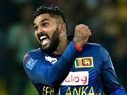
Wanindu Hasaranga (C)
Captain, all-rounder.
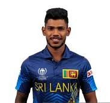
Pathum Nissanka
Opener, consistent scorer.
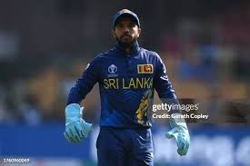
Kusal Mendis
Wicketkeeper-batsman, aggressive.
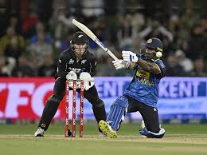
Kusal Perera
Batsman, explosive opener.
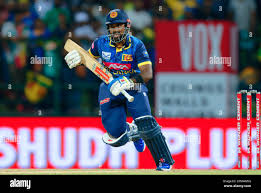
Charith Asalanka
Batsman, middle-order anchor.
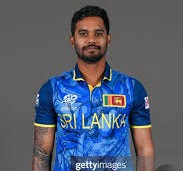
Dhananjaya de Silva
All-rounder, off-spinner.
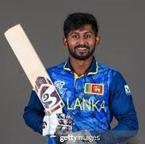
Kamindu Mendis
All-rounder, versatile.
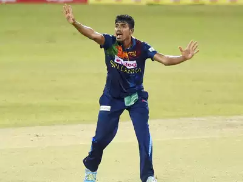
Maheesh Theekshana
Spinner, mystery bowler.
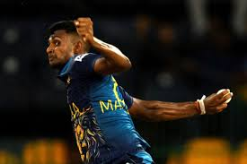
Matheesha Pathirana
Bowler, death specialist.
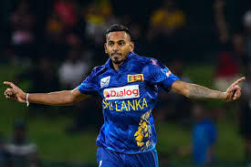
Dushmantha Chameera
Bowler, pace bowler.
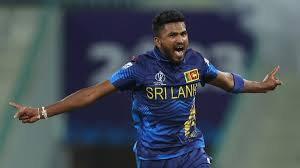
Dilshan Madushanka
Bowler, swing specialist.